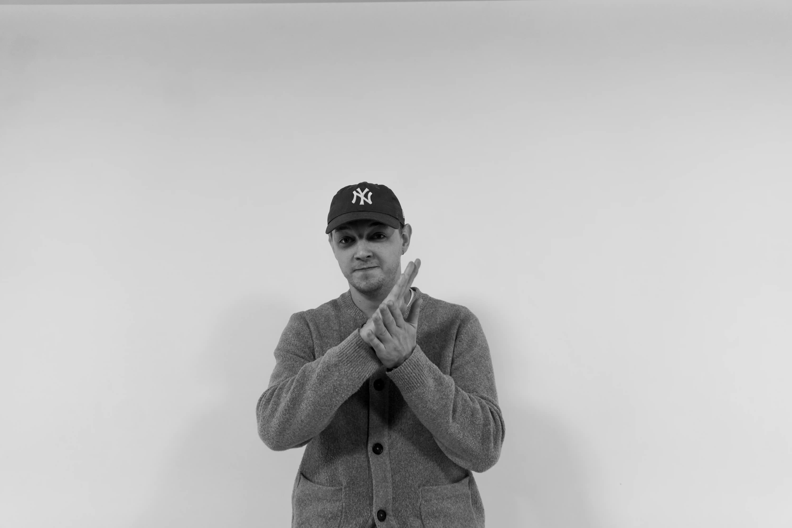
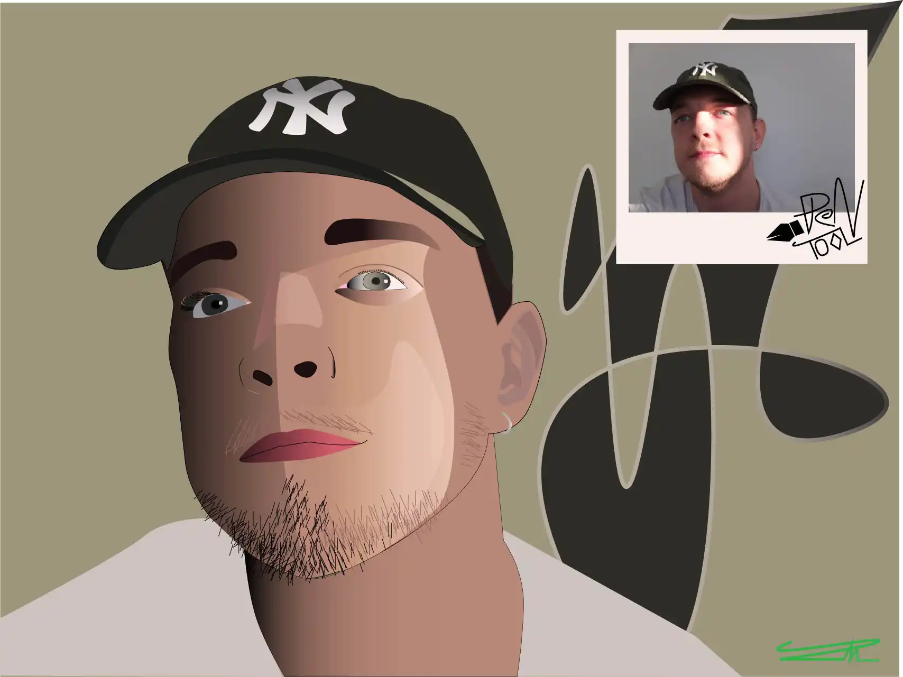

Hej!
Mit navn er Peter Neldeborg Larsen,
og jeg brænder for design, der skaber værdi for brugeren.
Jeg studerer multimediedesign i Odense.
Denne hjemmeside har jeg kodet,
for at vise en smule af, hvad jeg kan.
Design skal løse problemer og give mening.
Min ambition er at skabe lækkert, kreativt, brugbart og imponerende digitalt design.
Skal vi skabe det sammen?

